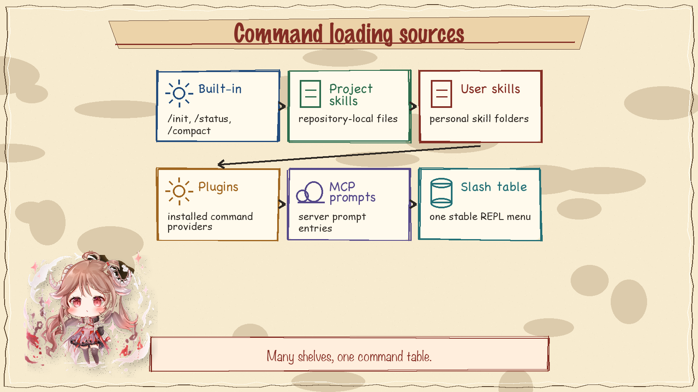
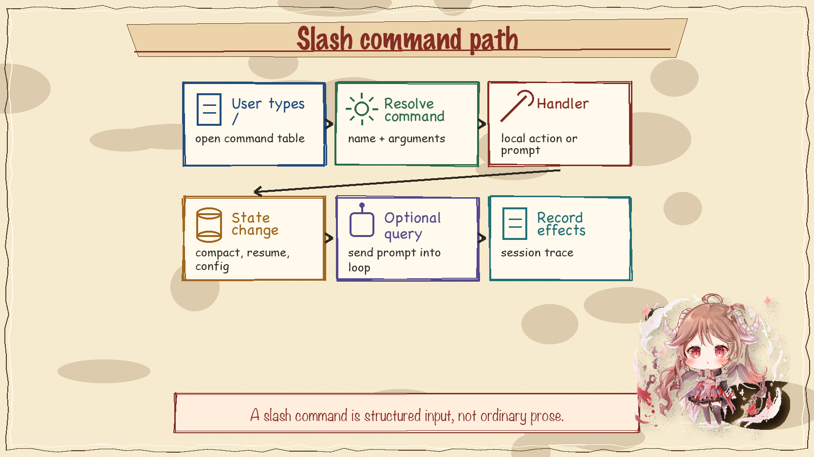
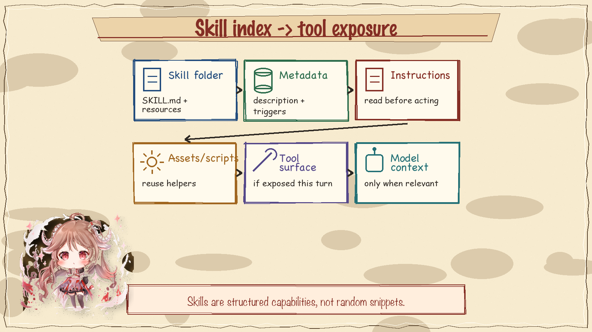
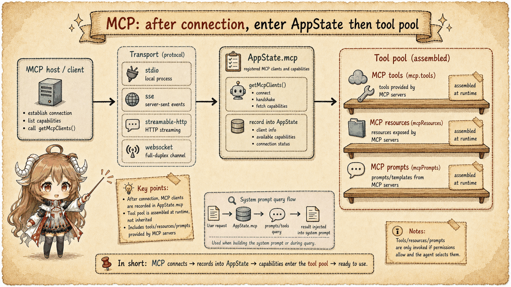

A user sees many entrances: /init, project skills, plugin commands, MCP prompts, MCP tools, and built-in tools. The runtime cannot treat them as a mystery pile. It has to load, normalize, deduplicate, and expose them in the right place for the current turn.
getCommands(cwd)
-> built-in commands
-> user / project commands
-> plugin commands
-> skill-backed commands
AppState.mcp
-> MCP tools / prompts / resources
-> model-facing tool pool for the next turn1. Commands are user-facing entrances
Built-in slash commands live in the command registry. More commands can arrive from skills or plugins. The command-loading path gives the REPL a stable table it can use when the user types /. The model does not call slash commands directly; slash commands are mostly user-facing routes into prepared behavior.

2. A slash command turns text into a structured route
When a slash command is selected, the REPL handles it as a command object rather than ordinary chat text. That distinction matters because some commands modify local session state, some produce a prompt, and some start a specialized path such as compact or resume.

3. Skills can add both instructions and tools
A skill is not just prose. It can provide instructions, assets, scripts, and sometimes a tool surface. The runtime needs to index skill metadata, decide what is relevant, and make the resulting ability available at the right layer. This is why skills belong in a capability-pool discussion instead of a documentation-only discussion.

4. MCP tools join the model-facing tool pool
MCP is different because it can expose tools to the model. After clients connect and capabilities are discovered, MCP tools are assembled with built-in tools and filtered by availability, settings, and permission rules. From the provider request's point of view, they become part of the tool schema list.

5. The invariant
Extension surfaces are not magic backdoors. A capability has to become either a user command, a model-visible tool, or local runtime state. If you know which bucket it enters, you can predict which gates will govern it next.
Sources
The source-code claims in this article are based on the public mirror and the linked official documentation. Server-side behavior and private feature-gate policy are treated only as client-visible request shape.